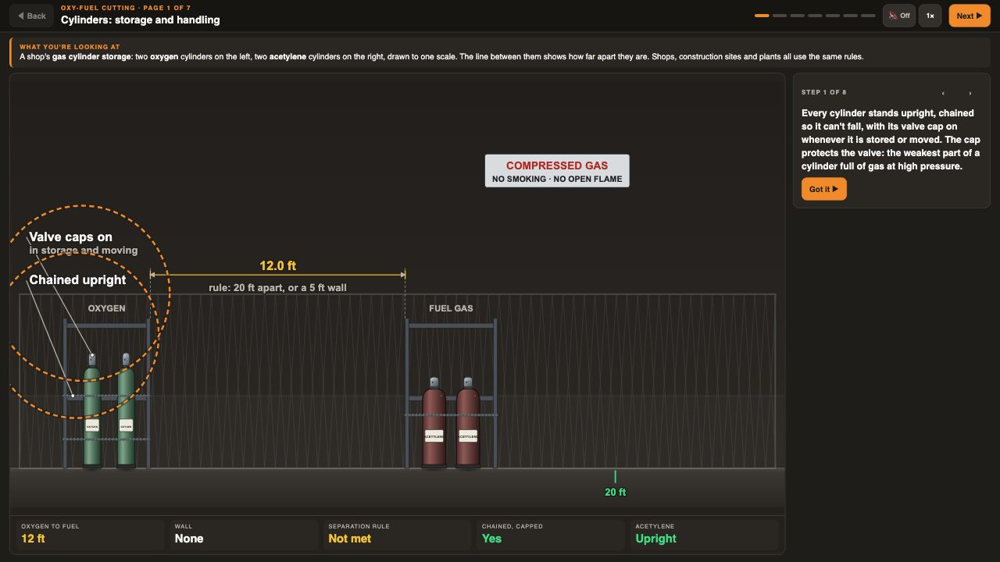

Free sample lesson · Level 1 · Cutting · no sign-up
Oxy-fuel cutting
Store and move cylinders, set up a cutting outfit in order, light it and set a neutral flame, then cut plate from the tip chart. Cause a backfire, oil on a regulator, acetylene past 15 psi and a cut run too fast, safely, on the simulator.
The sample lesson. Every CrewForge lesson works like this one: short simulator pages, one idea each, with the narrator, practice questions and a summary sheet.

Open full screen · 7 pages · 16 practice questions · narrated (AI voice) · exam preparation only: always check the torch and regulator maker's instructions and your hot work permit.
What's in the lesson
- Cylinders: storage and handling. A shop's gas cylinder storage: two oxygen cylinders on the left, two acetylene cylinders on the right, drawn to one scale.
- Setting up, in order. An oxy-acetylene cutting outfit in a fab shop: two cylinders chained on a cart, a cutting torch on a roller guide over a plate on the cutting table.
- Pressures, lighting and the flame. Close up on a two-hose cutting torch: the fuel valve and oxygen valve at the hose end, the preheat oxygen valve on the cutting attachment, the cutting lever on top.
- Cutting: tip chart, speed, drag lines. A mild steel plate on the slats of a cutting table, drawn to scale.
- Shutting down and hot work safety. The same cutting outfit, lit with a neutral flame.
- Plasma cutting basics. Looking down on a welding bench: a 45 A air plasma cutter, its air line, the torch lead and the work clamp.
- Putting it together. A real job: cut a 1/2 in mild steel plate for a new pump base, in a fab shop.
How it works
- One idea per page, each built around a simulator you work yourself. The last page puts it all together on one job.
- A narrator reads each step aloud. Mute it or slow it down at the top right, or read it yourself.
- Each step tells you what to do and what to watch. Stuck? Hint, then Show me: the simulator does it, then hands back.
- Practice questions along the way. Pick a wrong answer and you see why it's wrong, then get a new, similar question.
- After the steps, free play: every control unlocked, Reset, and "Give me a challenge".
- Nothing locks. Back and Next always work, and your place is kept in this browser.
- Print the short summary sheet: the rules and key numbers, light on toner.
Exam preparation, not a procedure. On the job, check the tag, the manufacturer's data and your lift or work plan.